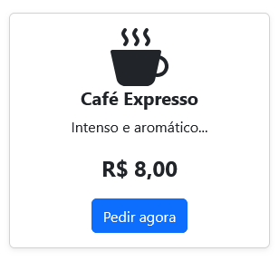
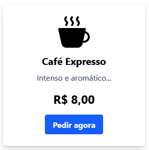
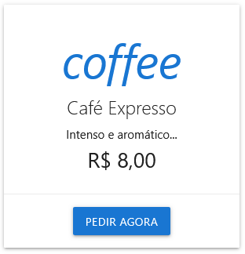

Introdução ao Bootstrap 5
O Framework Front-End Mais Popular do Mundo
Prof. Will - COTIL - UNICAMP
Pressione → para avançar
O que é um Framework CSS?
Imagine uma caixa de ferramentas para construir sites. Em vez de criar cada botão, menu e layout do zero, um framework te dá peças prontas e regras de construção para montar tudo de forma rápida, consistente e responsiva.
Os Titãs do Front-End
Existem vários frameworks populares, cada um com sua filosofia:
Bootstrap
O "canivete suíço". Traz componentes prontos (menus, botões, modais) e um sistema de grid poderoso. Ótimo para prototipagem rápida e projetos em geral.
Tailwind CSS
O "Lego". Não te dá componentes prontos, mas sim classes utilitárias (peças pequenas) para você construir qualquer design direto no HTML. Altamente customizável.
Materialize / Material-UI
O "kit do Google". Implementa o Material Design. Excelente para criar interfaces com a cara dos produtos Google (Android, Gmail).
Exemplo Prático: Código Bootstrap
HTML limpo, focado em componentes. Classes como .card e .btn já trazem o estilo pronto.
<!-- Card com Bootstrap 5 -->
<div class="card shadow-sm" style="width: 18rem;">
<div class="card-body text-center">
<svg class="bi bi-cup-hot-fill mb-3 text-primary" ...>
<!-- Caminho do ícone -->
</svg>
<h5 class="card-title fw-bold">Café Expresso</h5>
<p class="card-text">Intenso e aromático...</p>
<p class="fs-4 fw-bold">R$ 8,00</p>
<a href="#" class="btn btn-primary">Pedir agora</a>
</div>
</div>Exemplo Prático: Bootstrap Renderizado
O resultado é um componente visualmente coeso, montado rapidamente com poucas classes.
Exemplo Prático: Código Tailwind CSS
HTML "poluído" com classes utilitárias. Cada classe faz uma única coisa (cor, padding, sombra, etc).
<!-- Card com Tailwind CSS -->
<div class="max-w-xs rounded-lg shadow-lg bg-white p-6 text-center">
<svg class="mx-auto h-12 w-12 text-blue-600" ...>
<!-- Código do ícone SVG -->
</svg>
<div class="font-bold text-xl mb-2 mt-3">Café Expresso</div>
<p class="text-gray-700 text-base">
Intenso e aromático...
</p>
<p class="text-2xl font-bold mt-4">R$ 8,00</p>
<button class="bg-blue-600 hover:bg-blue-700 text-white font-bold py-2 px-4 rounded mt-4">
Pedir agora
</button>
</div>Exemplo Prático: Tailwind Renderizado
O resultado é um design altamente customizado, mas com o custo de um HTML mais verboso.
Exemplo Prático: Código Materialize CSS
Segue o padrão Material Design. Usa classes como .card e .btn, mas com nomes e efeitos próprios, como waves-effect.
<!-- Card com Materialize CSS -->
<div class="card" style="width: 300px;">
<div class="card-content center-align">
<i class="material-icons large blue-text text-darken-2">coffee</i>
<span class="card-title">Café Expresso</span>
<p>Intenso e aromático...</p>
<p style="font-size: 1.8rem; ...">R$ 8,00</p>
</div>
<div class="card-action center-align">
<a href="#" class="waves-effect waves-light btn blue darken-2">
Pedir agora
</a>
</div>
</div>Exemplo Prático: Materialize Renderizado
O visual segue a filosofia do Google: sombras para dar profundidade (elevação) e animações de feedback (ondulação no botão).
Por que aprender Bootstrap?
Velocidade: Você constrói layouts complexos e responsivos em minutos.
Consistência: Garante que seu site tenha uma aparência profissional e coesa.
Popularidade: É o mais usado no mundo. Saber Bootstrap te abre muitas portas no mercado de trabalho.
Como incluir o Bootstrap?
É ridiculamente fácil! Apenas adicione duas linhas no <head> e uma no final do <body> do seu HTML, usando a CDN (Rede de Distribuição de Conteúdo).
<!-- No HEAD do seu HTML -->
<link href="https://cdn.jsdelivr.net/npm/bootstrap@5.3.3/dist/css/bootstrap.min.css" rel="stylesheet">
<!-- Antes de fechar o BODY -->
<script src="https://cdn.jsdelivr.net/npm/bootstrap@5.3.3/dist/js/bootstrap.bundle.min.js"></script>Missão Prática: Portfólio Responsivo!
🚨 EXERCÍCIO PRÁTICO 🚨
A partir de agora, vamos construir um site de portfólio passo a passo. A cada novo conceito, você receberá uma nova tarefa para aplicar no seu projeto.
Missão 1: A Estrutura Inicial
- Crie um arquivo
index.html. - Adicione a estrutura básica do HTML.
- Inclua os links da CDN do Bootstrap no
<head>e no final do<body>. - No
<body>, adicione a tag<div class="container">Olá, Bootstrap!</div>.
Abra no navegador. Se a fonte do texto mudou, parabéns! O Bootstrap está funcionando.
O Coração do Bootstrap: O Sistema de Grid
O Bootstrap organiza o layout em um sistema de 12 colunas. Tudo no seu site vive dentro de uma hierarquia:
.container (a caixa principal) → .row (uma linha) → .col (as colunas)
Entendendo as Colunas
Você pode definir quantas das 12 colunas um elemento deve ocupar. A soma das colunas em uma .row deve ser, idealmente, 12.
Missão Prática: O Cabeçalho
Missão 2: Criando o Header
Dentro do seu .container, substitua o "Olá, Bootstrap!" por um cabeçalho.
- Crie um
<header>e adicione a classe.row. - Dentro da linha, crie dois
<div>s. - No primeiro, adicione a classe
.col-6e coloque seu nome. - No segundo, adicione a classe
.col-6e coloque links de navegação.
Seu cabeçalho agora deve estar dividido em duas colunas iguais!
Responsividade com Breakpoints
O Bootstrap usa "breakpoints" para mudar o layout em diferentes tamanhos de tela. Combinamos as classes para definir o comportamento em cada tamanho.
Tabela de Breakpoints
A chave é combinar as classes para criar layouts que se adaptam perfeitamente.
| Prefixo da Classe | Tamanho da Tela | Uso Comum |
|---|---|---|
.col- |
<576px | Celulares (Layout empilhado) |
.col-sm- |
≥576px | Celulares em paisagem / Tablets pequenos |
.col-md- |
≥768px | Tablets |
.col-lg- |
≥992px | Desktops |
.col-xl- |
≥1200px | Desktops grandes |
Exemplo de Responsividade
Este layout tem 1 coluna no mobile, 2 no tablet e 3 no desktop.
<div class="row">
<!-- Ocupa 12/12 no mobile, 6/12 no tablet, 4/12 no desktop -->
<div class="col-12 col-md-6 col-lg-4">...</div>
<div class="col-12 col-md-6 col-lg-4">...</div>
<div class="col-12 col-md-6 col-lg-4">...</div>
</div>Redimensione a janela do navegador para ver a mágica!
Missão Prática: Galeria de Projetos
Missão 3: Layout da Galeria
Abaixo do seu <header>, crie a galeria de projetos.
- Crie uma nova
<div class="row">. - Dentro, adicione 3
<div>s para serem os cards dos seus projetos. - Em cada card, adicione as classes para que o layout seja:
- 1 coluna em telas pequenas (
.col-12). - 2 colunas em telas médias (
.col-md-6). - 3 colunas em telas grandes (
.col-lg-4).
- 1 coluna em telas pequenas (
Design no Bootstrap: Cores Temáticas
O Bootstrap não é só sobre estrutura, é também sobre design. Ele oferece um sistema de cores temáticas que você pode aplicar a quase tudo.
As Cores Principais
Essas cores têm um significado e ajudam a criar uma interface consistente e intuitiva.
Componentes: A Magia Pronta
Agora que entendemos as cores, vamos ver os componentes. Eles são blocos de código pré-estilizados que usam essas cores para acelerar nosso trabalho.
Componente: Alertas
O que é? Caixas para exibir mensagens importantes.
Quando usar? Para feedback ao usuário (sucesso, erro, aviso).
<div class="alert alert-success" role="alert">
Operação concluída com sucesso!
</div>Componente: Botões
O que é? Elementos clicáveis para ações.
Variações? Cor, estilo (outline), tamanho (.btn-sm, .btn-lg).
<button type="button" class="btn btn-primary">...</button>
<button type="button" class="btn btn-outline-secondary">...</button>
<button type="button" class="btn btn-success btn-lg">...</button>Componente: Cards
O que é? Um contêiner de conteúdo flexível e versátil.
Quando usar? É a base para quase tudo: posts de blog, perfis, produtos, etc. Você pode colocar imagens, títulos, textos, listas e botões dentro dele.
Exemplo de Card
Título do Projeto
Uma breve descrição sobre este projeto incrível que demonstra minhas habilidades.
Ver Detalhes<div class="card">
<img src="..." class="card-img-top">
<div class="card-body">
<h5 class="card-title">Título</h5>
<p class="card-text">Descrição...</p>
<a href="#" class="btn btn-primary">Botão</a>
</div>
</div>Missão Prática: Estilizando a Galeria
Missão 4: Dando Vida aos Cards
Agora, vamos transformar os <div>s da sua galeria em cards de verdade.
- Para cada um dos 3
<div>s da galeria, adicione a classe.card. - Dentro de cada card, adicione a estrutura completa: uma imagem no topo, um
.card-body, um.card-title, um.card-texte um.btn. - Adicione um espaçamento entre as colunas e linhas com a classe
.g-4na sua.rowda galeria.
Sua galeria agora deve ter 3 cards responsivos e profissionais!
Classes Utilitárias
Bootstrap oferece centenas de "classes ajudantes" para ajustes finos de espaçamento, cores, texto e mais.
Utilitários de Espaçamento
Controle margens e paddings com as classes m- (margin) e p- (padding).
Ex: .mt-5 (margin-top: 5), .px-3 (padding-x: 3).
Utilitários de Flexbox
Bootstrap torna o Flexbox ainda mais fácil com classes como .d-flex, .justify-content-between, .align-items-center.
Missão Prática: Refinamento
Missão Final: Os Toques Finais
Vamos usar as classes utilitárias para polir nosso portfólio.
- No
<header>, adicione as classes.py-3,.mb-4, e.border-bottomna sua.row. - Ainda no header, adicione as classes
.d-flexe.align-items-centerna.rowpara alinhar tudo verticalmente. - Crie um
<footer>, adicione a classe.mt-5e centralize o texto com.text-center.
Parabéns! Você construiu um portfólio completo e responsivo!
Resumo da Aula
Hoje nós aprendemos:
- O que são frameworks e suas diferenças.
- Como funciona o sistema de grid e os breakpoints.
- O sistema de cores temáticas do Bootstrap.
- Como usar componentes prontos como Cards, Alertas e Botões.
- Como usar classes utilitárias para ajustes finos.
Próximos Passos
O que vimos hoje é apenas a ponta do iceberg! Bootstrap é um universo de componentes e utilitários para acelerar seu desenvolvimento.
Na próxima aula, vamos mergulhar em componentes interativos essenciais como Alerts, Modals e Forms.
Até lá, explore a documentação oficial do Bootstrap. É a sua melhor fonte de consulta!